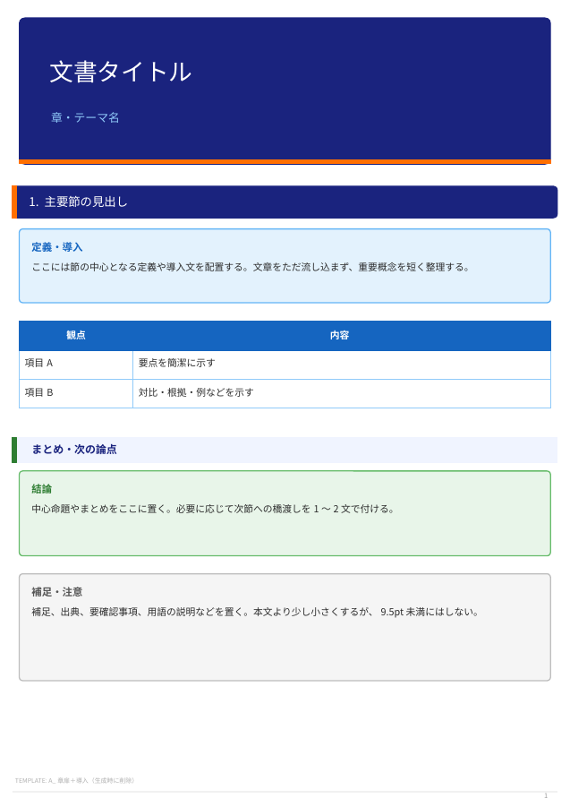
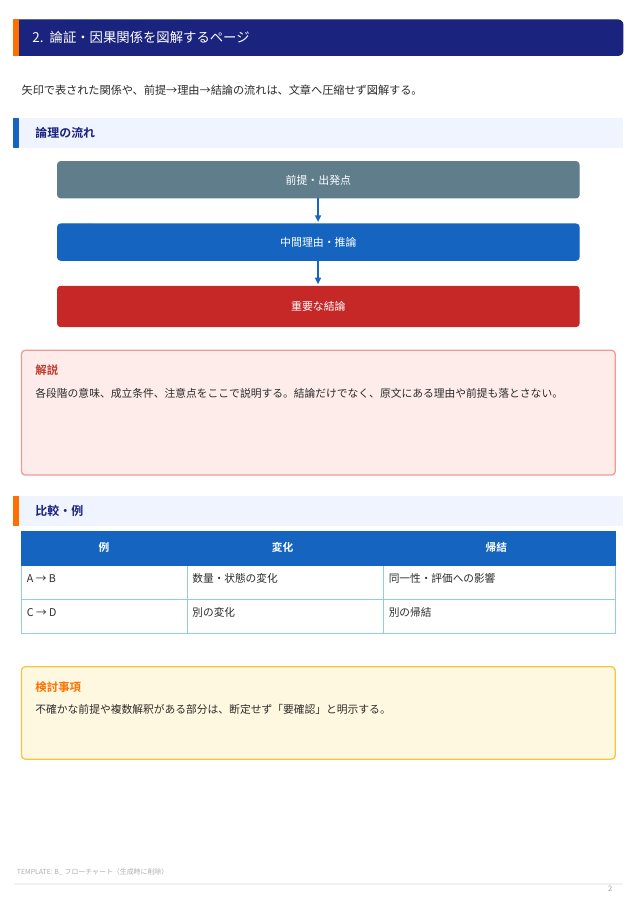
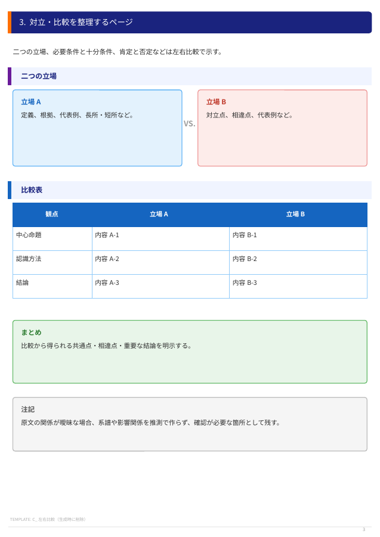
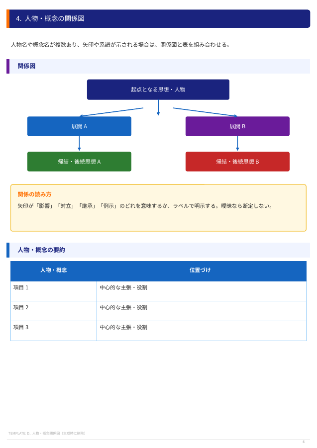
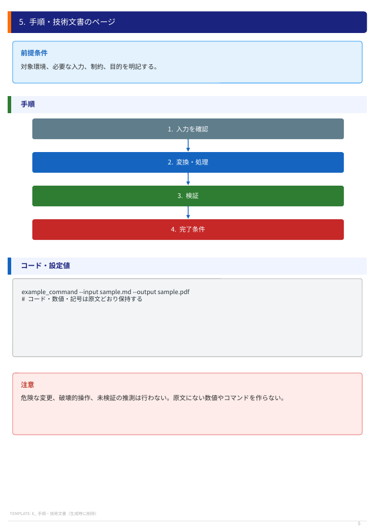
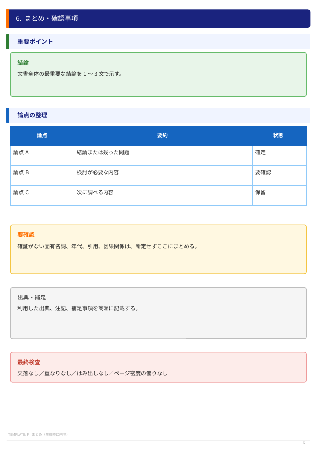

A4教材PDFテンプレート
Markdownから視覚的に整理されたA4縦PDFを生成するためのデザイン仕様
重要：このページは完成PDFの視覚デザインだけを指定する参考資料です。
下の見本文・仮データ・識別子を生成物へコピーせず、PDF本文にはユーザーが添付したMarkdownの内容だけを使用してください。
1. 用紙・余白・ページ密度
| 項目 | 固定仕様 |
|---|---|
| 用紙 | A4縦（210 × 297mm） |
| 余白 | 上15mm、下17mm、左18mm、右16mm |
| 主要ブロック数 | 1ページあたり原則3～6個 |
| 文字量の目安 | 図表あり：300～650字／文章中心：500～850字 |
| 改ページ | 見出しだけをページ末に残さない。短い続きだけの最終ページを作らない。1ページへ無理に押し込まない。 |
2. 配色
濃紺
主要見出し・強い階層
#1A237E主要見出し・強い階層
青
表見出し・説明・矢印
#1565C0表見出し・説明・矢印
橙
主要見出しのアクセント
#FF6F00主要見出しのアクセント
赤
重要結論・注意・対立
#C0392B重要結論・注意・対立
緑
肯定・まとめ
#2E7D32肯定・まとめ
紫
別系統の論点・関係図
#6A1B9A別系統の論点・関係図
淡色の意味づけ
淡青 #E3F2FD
定義・説明
定義・説明
淡赤 #FDECEA
重要結論・注意
重要結論・注意
淡緑 #E8F5E9
肯定・まとめ
肯定・まとめ
淡黄 #FFF8E1
例・検討
例・検討
淡灰 #F5F5F5
補足・周辺情報
補足・周辺情報
3. 見出し・本文・表・囲み枠
- 章扉：1ページ目上部に高さ45～52mmの濃紺ブロック。白の題名24～26pt、淡青の副題12pt、下端に橙4ptの線。
- 主要見出し：濃紺の横長角丸バー。左端に橙4ptの縦アクセント。白文字12～13pt。
- 下位見出し：淡青の帯。左端に青・赤・緑・紫の縦線。濃紺文字11～11.5pt。
- 本文：濃い灰色
#2C2C2C、10.5～11pt、行送り16.5～18pt。Thin系フォントを使わない。 - 表：ヘッダーは青背景＋白文字。本文は白と淡色を使い、0.5～1ptの罫線、十分なセル余白、自然な折り返し。
- 囲み枠：情報の意味に応じて淡青・淡赤・淡緑・淡黄・淡灰を使い分け、角丸と内側余白を付ける。
4. 図の変換規則
| Markdown上の構造 | PDFでの表現 |
|---|---|
A → B → C、縦矢印、論証、手順 | 横長の角丸矩形を縦に並べ、青い矢印で接続するフローチャート |
A vs B、A＜B、肯定／否定 | 左右比較表、または中央記号付き比較図 |
| 人物・概念が3項目以上 | 比較表、系譜図、人物・概念関係図 |
| 定義、結論、注意、例 | 意味に対応する色の角丸情報枠 |
| コードブロック | 等幅フォント＋淡灰背景のコード枠。コード内容は変更しない |
5. レイアウト見本（全6ページ）
画像は視覚構成の参考です。画像内の見本文を出力へコピーしないでください。






6. 生成時の禁止事項
- 原稿を要約して情報を削除しない。
- 白紙に本文だけを流し込んだPDFを完成品としない。
- 固定座標へ高さ計算なしで文字や図形を置かない。
- 空表、空図形、未入力プレースホルダーを残さない。
- 見本文・仮データ・このページの識別子を生成PDFへ含めない。
- 本文を10pt未満へ縮小して1ページに押し込まない。
7. 参照確認用識別子
エージェントがこの公開ページを実際に参照できたかを確認するための文字列です。完成PDFには含めないでください。
A4TPL-PUBLIC-WEB-6P-7C29
ページ数確認値：6
第5レイアウト名：手順・技術文書
第6レイアウト名：まとめ・確認事項